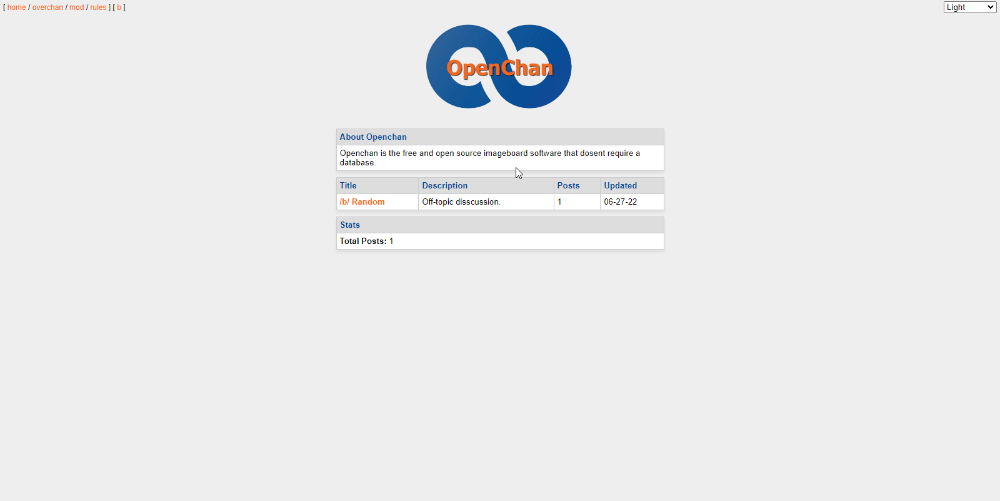

Brody King
Brody King
A free and open source imageboard script that doesn't require a database.
/projects/openchan/
Last modified on June 27, 2022
There are many imageboard scripts out there for anyone to use, so why this one? Well there is not really a reason. If you like a simplier layout and a more textboard style website that also supports images, then this script is for you! But I still would not reccomend anyone use this script yet. There are a few things that have not been done to make this secure yet. I will talk about it later in this readme.
To continue reading the docs, please check the github repo